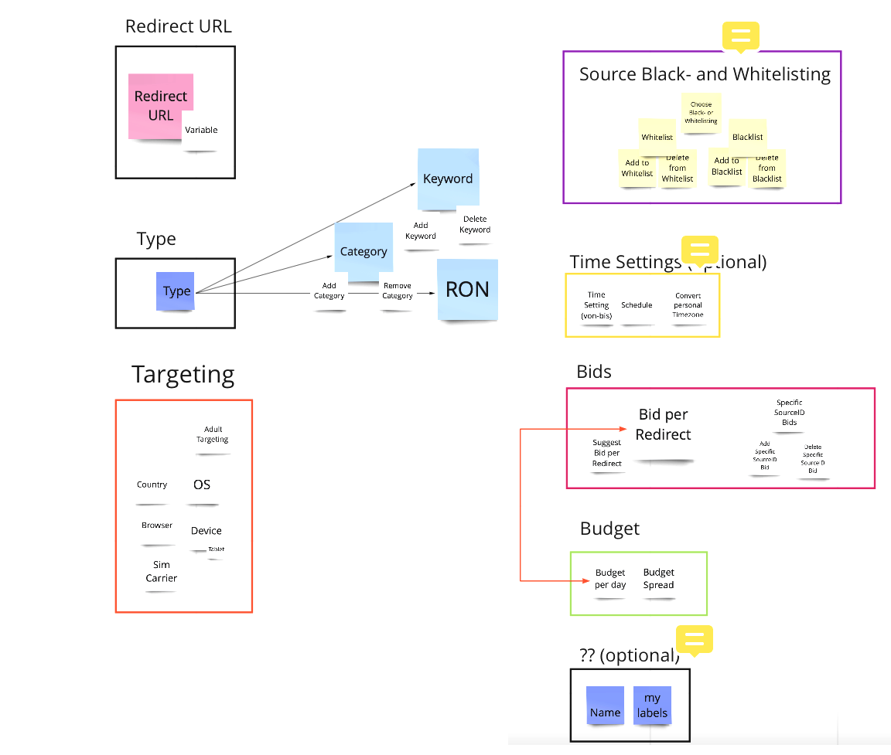
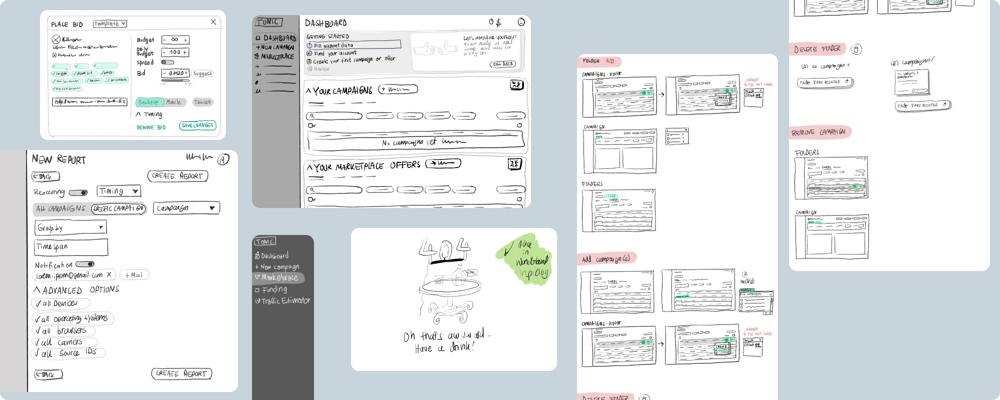
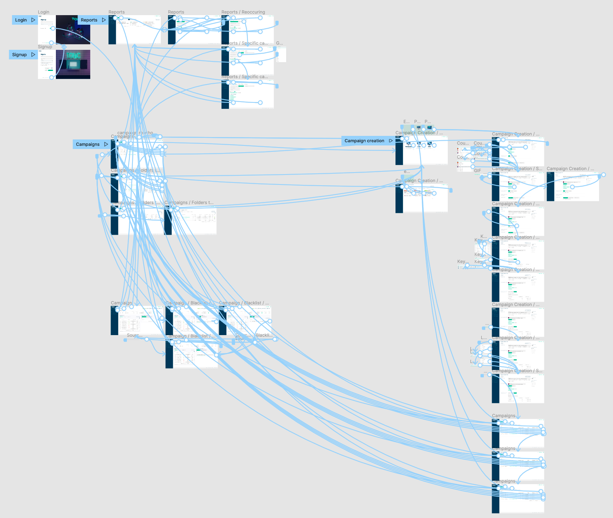
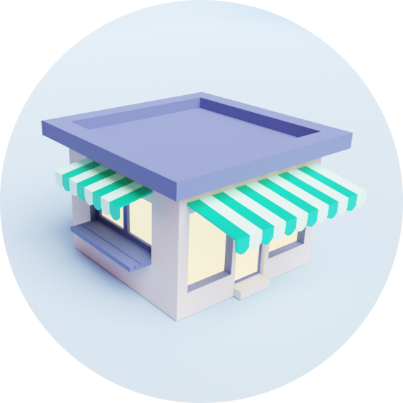
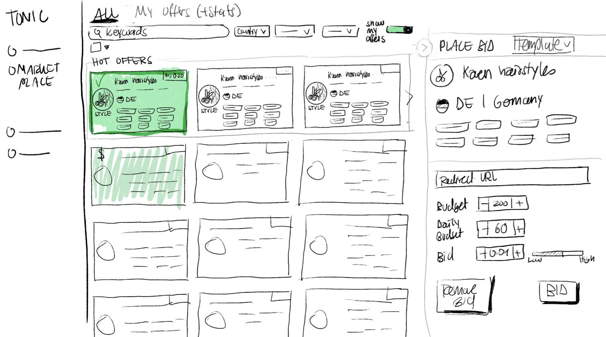

Conception
Card sorting
As the existing campaign creation process is complicated and not very user-friendly, yet our most important part of the product, I conducted a card sorting workshop with the TONIC.team. I wanted to rethink the campaign creation process. This workshop also led to a discussion on whether we needed all the objects and functions (blacklisting, whitelisting and source ID bidding) in the campaign creation process at all. I then analysed this in the user interviews.

Output from the card sorting workshop.

First version of the user journey map, created in the workshop
User journey map
Also with the TONIC. team I conducted a in office user journey map workshop. I digitalised the output and the user journey map got introduced to the account manager after the session for validation and second input. The user journey specially made clear that we have to look closer on the new user onboarding in the future. The journey was later adapted according to the user interviews and more details were added.
Wireframes & Designs
Iteratively (starting with wireframes), I created high fidelity designs that were validated through cognitive walkthroughs and design critiques. Our focus is on the desktop view as only 6% of our users access TONIC via a mobile device. User research has also confirmed our assumption that the need of our users to use TONIC. mobile is almost non-existent. Nevertheless, we want to make the mobile experience as good as possible and therefore offer Responsive Design.

A selection of the wireframes for TONIC.

A selection of the high fidelity designs for TONIC. The focus is on the desktop view as only 6% of our users access TONIC via a mobile device. Nevertheless, we want to make the mobile experience as good as possible and therefore offer Responsive Design.
Click-prototype
I created a click prototype with the designs. In doing so, I represented the most important processes - account creation, campaign creation, campaign detail view, campaign editing, etc. I also created alternative versions for comparison where relevant. Details such as hover effects and animations through GIFs were also implemented to create as real an experience as possible. The prototype was later used in the user tests.

Collaborative sketching workshop
In addition to the new design for the existing product, an important feature is the implementation of a new ad type. I conducted a 'crazy 8' collaborative sketching workshop in which the scrum team, sales and stakeholders participated. In this, the first design ideas for the display of the inventory for the new ad type as well as the offer for individual offers were created. It turned out that the best way for the new ad type would be to completely decouple it from the existing ad types and therefore from the necessary campaign creation. The idea and the first designs for the TONIC. Marketplace and its Marketplace offers were born.

I created 3D icons in blender like this one for the marketplace.

Some of the output from the "crazy 8's" collaborative sketching workshop.

In the workshop collaboratively developed UI proposal for the marketplace